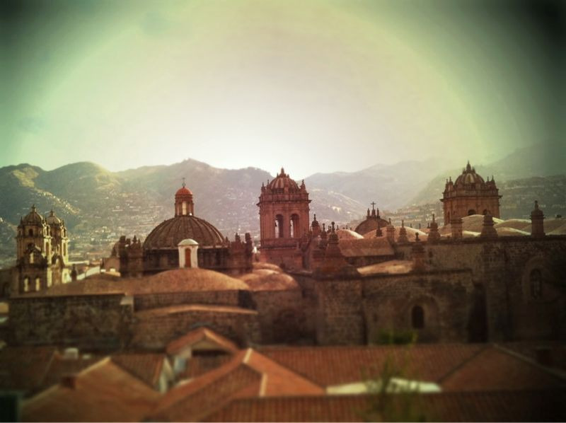

Sun, 07 Nov 2010 16:41:06 · Peru · Cusco · travel · photography · cityscene
view from the rooftop taken from atop cafe

View from the rooftop taken from atop Cafe Monasterio, Cusco, Peru.
• Shot with iPhone 4
Sun, 07 Nov 2010 16:41:06 · Peru · Cusco · travel · photography · cityscene

View from the rooftop taken from atop Cafe Monasterio, Cusco, Peru.
• Shot with iPhone 4